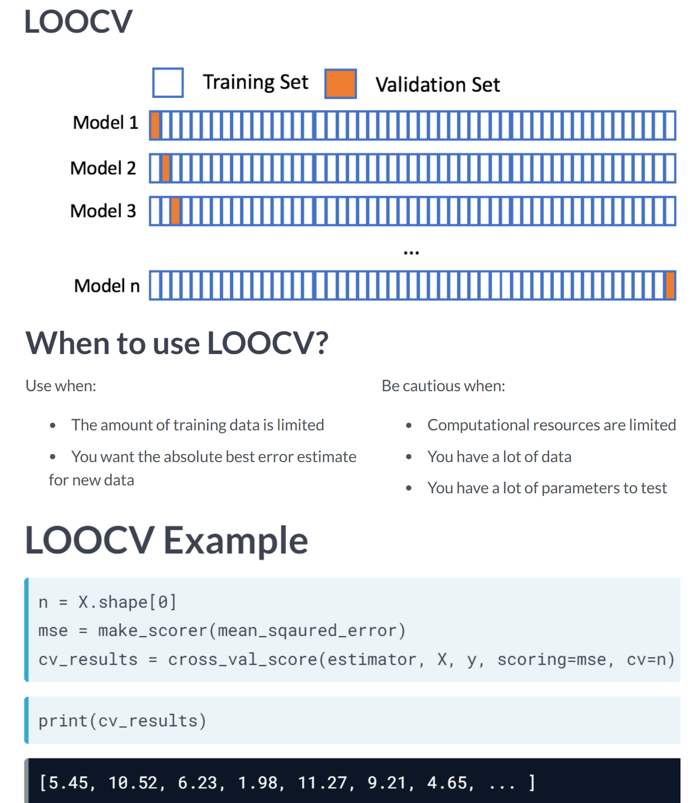

Holdout sets are an excellent starting point for model validation. It is important to note, however, that using one train and one test set is often not sufficient. When tuning model hyperparameters, cross-validation is considered the gold standard for validating model performance. The purpose of this chapter is to demonstrate how to perform cross-validation in order to validate the performance of a model.
This Cross Validation is part of Datacamp course: Model Validation in Python which describe about model validation as t has never been easier to implement machine learning models than it is today. The results of running new data through a model may not be as accurate as expected without proper validation. Validation of models allows analysts to answer confidently the question, “How good is your model?”. This question will be addressed for classification models using the complete set of tic-tac-toe endgame scenarios, and for regression models using fivethirtyeight’s ultimate Halloween candy power ranking dataset. The purpose of this course is to introduce the basics of model validation, to discuss various validation techniques, and to begin to develop tools for creating high-performance and validated models.
This is my learning experience of data science through DataCamp. These repository contributions are part of my learning journey through my graduate program masters of applied data sciences (MADS) at University Of Michigan, DeepLearning.AI, Coursera & DataCamp. You can find my similar articles & more stories at my medium & LinkedIn profile. I am available at kaggle & github blogs & github repos. Thank you for your motivation, support & valuable feedback.
These include projects, coursework & notebook which I learned through my data science journey. They are created for reproducible & future reference purpose only. All source code, slides or screenshot are intellactual property of respective content authors. If you find these contents beneficial, kindly consider learning subscription from DeepLearning.AI Subscription, Coursera, DataCamp
Code
import pandas as pdimport matplotlib.pyplot as pltimport seaborn as snsfrom sklearn.model_selection import train_test_splitfrom sklearn.metrics import mean_absolute_error as maefrom sklearn.ensemble import RandomForestRegressorfrom sklearn.ensemble import RandomForestClassifierimport numpy as np
Code
plt.rcParams['figure.figsize'] = (8, 8)
The problems with holdout sets
Two samples
After building several classification models based on the tic_tac_toe dataset, you realize that some models do not generalize as well as others. You have created training and testing splits just as you have been taught, so you are curious why your validation process is not working.
After trying a different training, test split, you noticed differing accuracies for your machine learning model. Before getting too frustrated with the varying results, you have decided to see what else could be going on.
# Create two different samples of 200 observationssample1 = tic_tac_toe.sample(200, random_state=1111)sample2 = tic_tac_toe.sample(200, random_state=1171)
Code
# Print the number of common observationsprint(len([index for index in sample1.index if index in sample2.index]))
40
Code
# Print the number of observations in the Class column for both samplesprint(sample1['Class'].value_counts())print(sample2['Class'].value_counts())print("\nNotice that there are a varying number of positive observations for both sample test sets. Sometimes creating a single test holdout sample is not enough to achieve the high levels of model validation you want. You need to use something more robust.")
positive 134
negative 66
Name: Class, dtype: int64
positive 123
negative 77
Name: Class, dtype: int64
Notice that there are a varying number of positive observations for both sample test sets. Sometimes creating a single test holdout sample is not enough to achieve the high levels of model validation you want. You need to use something more robust.
scikit-learn’s KFold()
You just finished running a colleagues code that creates a random forest model and calculates an out-of-sample accuracy. You noticed that your colleague’s code did not have a random state, and the errors you found were completely different than the errors your colleague reported.
To get a better estimate for how accurate this random forest model will be on new data, you have decided to generate some indices to use for KFold cross-validation.
X = candy.drop(['competitorname', 'winpercent'], axis=1).to_numpy()y = candy['winpercent'].to_numpy()
Code
from sklearn.model_selection import KFold# Use KFoldkf = KFold(n_splits=5, shuffle=True, random_state=1111)# Create splitssplits = kf.split(X)# Print the number of indicesfor train_index, val_index in splits:print("Number of training indices: %s"%len(train_index))print("Number of validation indices: %s"%len(val_index))print("\nThis dataset has 85 rows. You have created five splits - each containing 68 training and 17 validation indices. You can use these indices to complete 5-fold cross-validation.")
Number of training indices: 68
Number of validation indices: 17
Number of training indices: 68
Number of validation indices: 17
Number of training indices: 68
Number of validation indices: 17
Number of training indices: 68
Number of validation indices: 17
Number of training indices: 68
Number of validation indices: 17
This dataset has 85 rows. You have created five splits - each containing 68 training and 17 validation indices. You can use these indices to complete 5-fold cross-validation.
Using KFold indices
You have already created splits, which contains indices for the candy-data dataset to complete 5-fold cross-validation. To get a better estimate for how well a colleague’s random forest model will perform on a new data, you want to run this model on the five different training and validation indices you just created.
Code
splits = kf.split(X)splits
<generator object _BaseKFold.split at 0x0000023AF545D190>
Code
from sklearn.ensemble import RandomForestRegressorfrom sklearn.metrics import mean_squared_errorrfc = RandomForestRegressor(n_estimators=25, random_state=1111)# Access the training and validation indices of splitsfor train_index, val_index in splits:# Setup the training and validation data X_train, y_train = X[train_index], y[train_index] X_val, y_val = X[val_index], y[val_index]# Fit the random forest model rfc.fit(X_train, y_train)# Make predictions, and print the accuracy predictions = rfc.predict(X_val)print("Split accuracy: "+str(mean_squared_error(y_val, predictions)))
print("\nKFold() is a great method for accessing individual indices when completing cross-validation. One drawback is needing a for loop to work through the indices though. In the next lesson, you will look at an automated method for cross-validation using sklearn.")
KFold() is a great method for accessing individual indices when completing cross-validation. One drawback is needing a for loop to work through the indices though. In the next lesson, you will look at an automated method for cross-validation using sklearn.
scikit-learn’s methods
You have decided to build a regression model to predict the number of new employees your company will successfully hire next month. You open up a new Python script to get started, but you quickly realize that sklearn has a lot of different modules. Let’s make sure you understand the names of the modules, the methods, and which module contains which method.
Your company has created several new candies to sell, but they are not sure if they should release all five of them. To predict the popularity of these new candies, you have been asked to build a regression model using the candy dataset. Remember that the response value is a head-to-head win-percentage against other candies.
Before you begin trying different regression models, you have decided to run cross-validation on a simple random forest model to get a baseline error to compare with any future results.
Code
rfc = RandomForestRegressor(n_estimators=25, random_state=1111)mse = make_scorer(mean_squared_error)# Set up cross_val_scorecv = cross_val_score(estimator=rfc, X=X_train, y=y_train, cv=10, scoring=mse)# Print the mean errorprint(cv.mean())
131.30323056938693
Code
print("\n You now have a baseline score to build on. If you decide to build additional models or try new techniques, you should try to get an error lower than 155.56. Lower errors indicate that your popularity predictions are improving.")
You now have a baseline score to build on. If you decide to build additional models or try new techniques, you should try to get an error lower than 155.56. Lower errors indicate that your popularity predictions are improving.
Leave-one-out-cross-validation (LOOCV)

When to use LOOCV?
The amount of training data is limited
You want the absolute best error estimate for new data
Be cautious when:
Computation resources are limited
You have a lot of data
You have a lot of parameters to test
Let’s assume your favorite candy is not in the candy dataset, and that you are interested in the popularity of this candy. Using 5-fold cross-validation will train on only 80% of the data at a time. The candy dataset only has 85 rows though, and leaving out 20% of the data could hinder our model. However, using leave-one-out-cross-validation allows us to make the most out of our limited dataset and will give you the best estimate for your favorite candy’s popularity!
Code
from sklearn.metrics import mean_absolute_error, make_scorer# Create scorermae_scorer = make_scorer(mean_absolute_error)rfr = RandomForestRegressor(n_estimators=15, random_state=1111)# Implement LOOCVscores = cross_val_score(rfr, X=X, y=y, cv=85, scoring=mae_scorer)# Print the mean and standard deviationprint("The mean of the errors is: %s."% np.mean(scores))print("The standard deviation of the errors is: %s."% np.std(scores))
The mean of the errors is: 9.52044832324183.
The standard deviation of the errors is: 7.349020637882744.